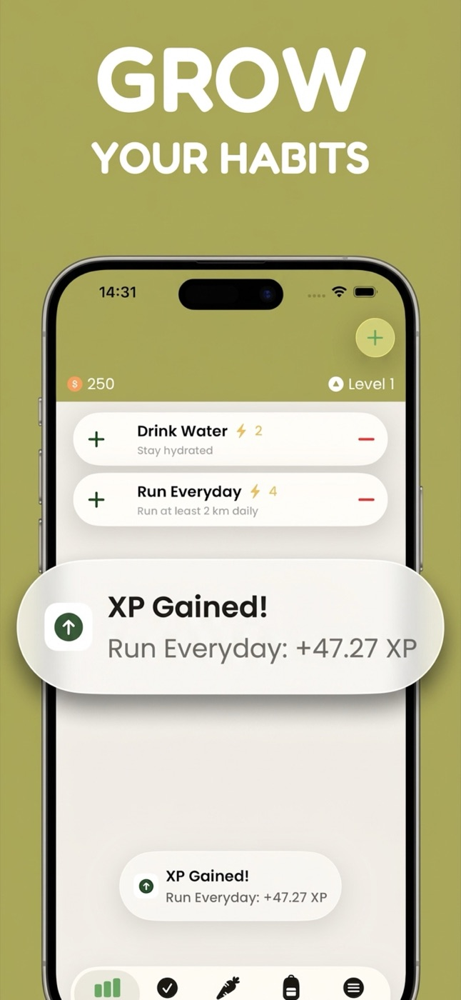
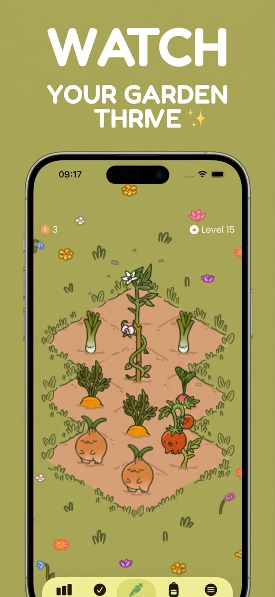
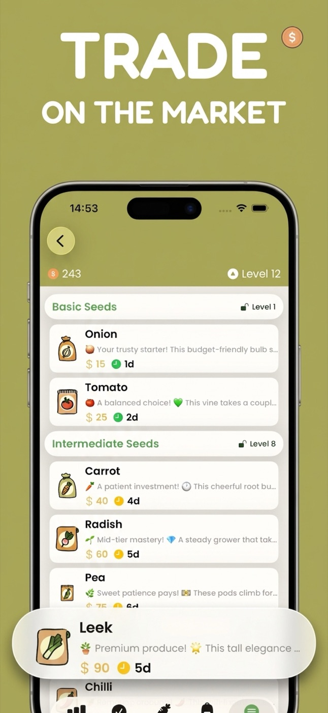
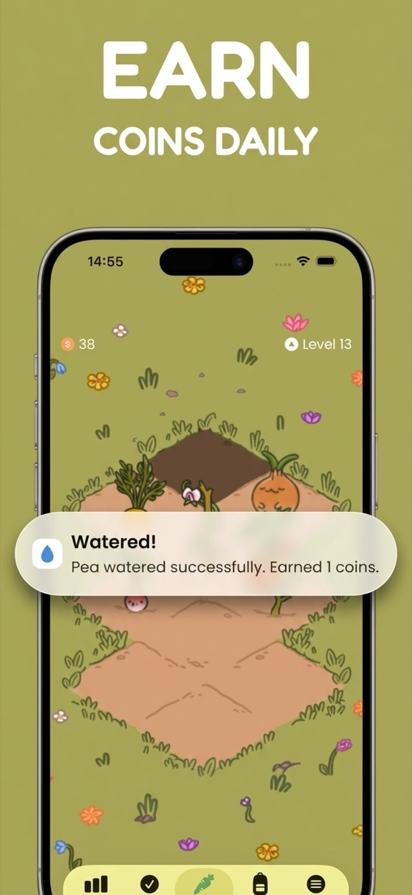
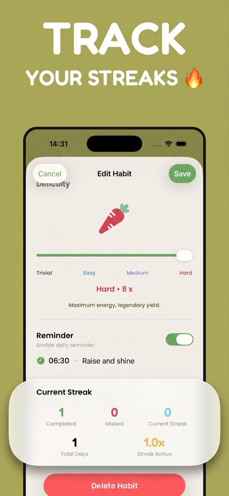

One-liner
Habitanics is a habit tracker for iOS where your daily habits grow a living garden — complete them and your crops thrive, skip them and your crops wilt.
Description
Habitanics turns habit building into a cozy farming game. Every habit you create plants a crop in your garden: tomatoes, carrots, wheat, onions. Completing the habit each day keeps the crop healthy and growing in real time; missing days makes it wilt. Fully grown crops can be harvested for coins, traded at the market for new seeds, and every completed habit earns XP that levels you up and unlocks more garden tiles.
Unlike streak-based trackers that reset to zero after one bad day, Habitanics uses a health system with inertia: one missed day slightly wilts a crop, consistent neglect kills it, and getting back on track restores it. The garden becomes an honest, glanceable picture of how your life is actually going.
The story
Habitanics is built by a solo indie developer who wanted a habit tracker that felt less like a spreadsheet and more like a game worth returning to. It is written natively in the latest SwiftUI with no accounts, no servers, and all personal data stored on-device.
Facts
| Name | Habitanics — Garden Habits |
| Platform | iOS (iPhone), iOS 26.0 or later |
| Price | Free, with optional premium subscription |
| Category | Productivity |
| Privacy | No account required; all personal data stored on-device |
| App Store | apps.apple.com/us/app/habitanics-garden-habits/id6763303488 |
| Website | habitanics.app |
Assets
Right-click any asset to save it. Full-resolution App Store screenshots available on request.
{kind=link}
{kind=link}

Habits{kind=link}

Garden{kind=link}

Market{kind=link}

Coins{kind=link}

StreaksContact
For review codes, interviews, or full-resolution assets: lado93@gmail.com